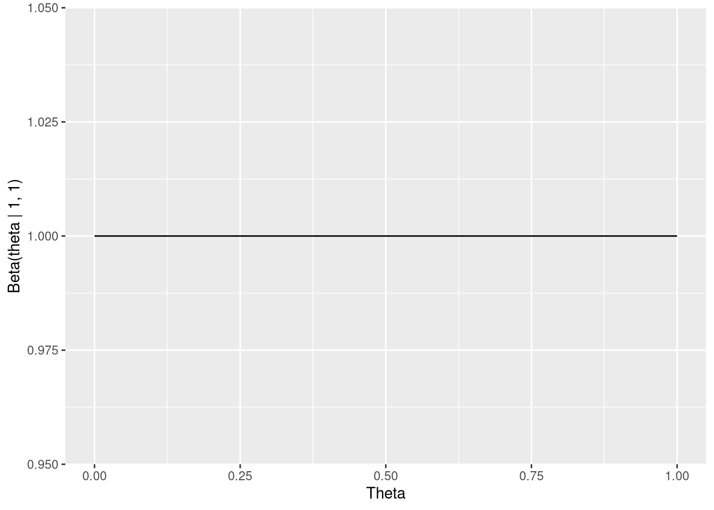
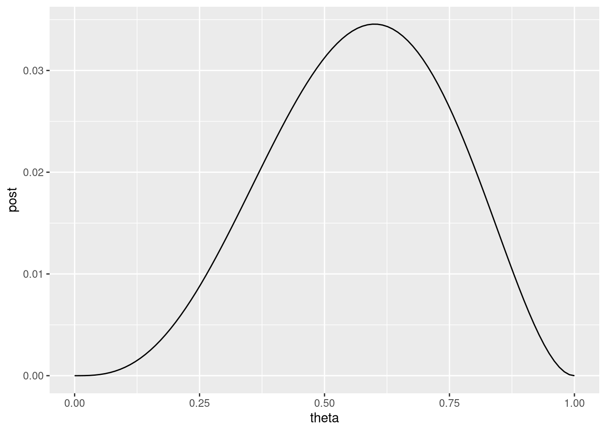
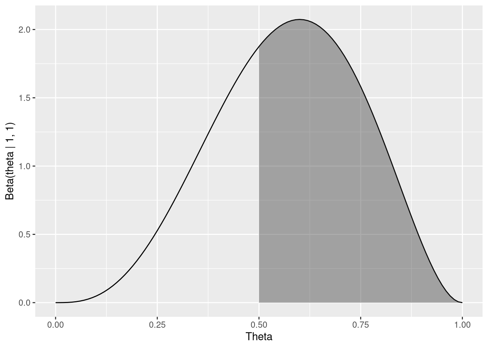

theta <- 0.7
throws <- rbinom(n = 100, size = 1, prob = theta)
table(throws)throws
0 1
25 75 An applied course using the R programming language
There are different competing paradigms for inferring unobserved model quantities, such as parameters, from data. The approach we will discuss here is Bayesian inference, which directly uses the language and formalism of probability to describe uncertainty in unknown quantities of interest. (the alternative is frequentist inference, which has been dominant for almost 100 years). Both approaches have certain advantages and disadvantages, but in my experience, Bayesian inference is often more intuitive in its handling of uncertainty and allows to focus on model construction, which should be the focus of statistical modelling efforts.
In his excellent book Statistical Rethinking, Richard McElreath (2020) describes the following experiment:
We are interested in inferring the share of the earth’s surface that is covered by Water. All we have is a waterball representing a globe which we throw repeatedly, each time recording whether our left thumb (or any other finger of choice) is on land or on water when we catch the ball. Assuming the throws are random, the sequence of observations generated from repeatedly throwing the ball should carry information about the proportion of the ball’s surface that is covered by water.
With this description, we can start building a simple model of the data generating process. Assuming the throws are independent and the probability of landing water or land only depends on the proportion of the surface covered by each, we can specify the result of throw \(i\) as coming from a Bernoulli distribution:
\[ Y_i \sim \textrm{Bernoulli}(\theta) \]
Here, \(Y_i\) is a random variable equal to 1 when the throw produces ‘water’, and 0 if it produces ‘land’. The parameter \(\theta\) is the underlying probability of observing ‘water’, which we want to learn about by observing how often our throws produce each of the two possible outcomes. Given our assumptions above, knowing \(\theta\) would tell us the share of the Earth’s surface covered by water.
If we knew \(\theta\), we could simulate the process with the rbinom function (there’s no built-in bernoulli distribution, because it is just a special case of the binomial distribution with size = 1):
theta <- 0.7
throws <- rbinom(n = 100, size = 1, prob = theta)
table(throws)throws
0 1
25 75 However, we usually don’t know the model parameters beforehand and instead have to estimate them from data. The next section will discuss how to do this.
In Bayesian inference, our goal is to obtain the posterior distribution of the parameters, given the data. Our two main components in getting it are the prior distribution of parameters (before we have seen the data) and the likelihood, which captures the influence of the data.
The likelihood evaluates how likely the observed data would have been under certain parameter configurations: E.g., imagine observing 10 water out of 100 throws for \(\theta = 0.7\). For this model, the likelihood of a single throw the probability mass function of the Bernoulli distribution. The likelihood of multiple throws is the product of the individual likelihoods:
\[ \textrm{likelihood}(\theta) = \prod_{i=1}^n \textrm{Bernoulli}(X=x_i | \theta) \]
where \(\textrm{Bernoulli}(X=x | \theta) = \theta^x (1 - \theta)^{1-x}\).
Analogously to how we can simulate data from the distribution with rbinom(), we can use dbinom() to evaluate the distribution function on a set of observations with a specific value for \(\theta\):
theta <- 0.7
obs <- c(0, 1, 1, 0, 1)
dbinom(obs, size = 1, prob = theta)[1] 0.3 0.7 0.7 0.3 0.7These are just the probabilities of observing the respective outcome in obs based on a Bernoulli distribution with \(\theta = 0.7\). Their combined likelihood (assuming that they are independent) is their product:
prod(dbinom(obs, size = 1, prob = theta))[1] 0.03087Based on this, we can see that the above data are more likely to be produced by, e.g., \(\theta = 0.6\) than \(\theta = 0.2\):
prod(dbinom(obs, size = 1, prob = 0.6))[1] 0.03456prod(dbinom(obs, size = 1, prob = 0.2))[1] 0.00512With the likelihood understood as a function of the parameter, we could now, e.g., find the value of \(\theta\) which maximizes it (aptly known as maximum likelihood estimation). Instead, we’re going to use it to get the posterior distribution of the parameter to additionally quantify our uncertainty about it. For this, we need an additional ingredient, the prior.
seq() function). What does it tell you?The prior distribution is the distribution of the parameter before seeing the data. If we are ignorant about the problem we’re studying, we can start from a point where we treat each possible value for \(\theta\) (i.e., each value in the (0, 1) range) as a priori equally likely. One distribution to encode this for the case discussed here is the beta distribution, which models a random variable taking values in the (0, 1) range. It has two parameters, and we get a flat distribution if we set both of them to 1:
library(tidyverse)
ggplot() +
stat_function(
fun = dbeta,
args = list(shape1 = 1, shape2 = 1)
) + labs(
x = "Theta", y = "Beta(theta | 1, 1)"
)
We can confirm that all possible values are equally likely by directly using the dbeta() function:
dbeta(c(0.2, 0.5, 0.8), shape1 = 1, shape2 = 1)[1] 1 1 1We can also confirm that values outside the possible range get a value of 0:
dbeta(2, shape1 = 1, shape2 = 1)[1] 0Specifying a flat prior, like we did above, means that we didn’t know anything about our problem before conducting the analysis. That is often not the case; Sometimes, we know something substantial about the problem at hand, and sometimes we just have a vague knowledge about what would be an implausible outcome. We can use this knowledge to specify better priors, and indeed specifying reasonable priors has a range of benefits. Luckily, we often can rely on software to help us with this, although it is always good to check one’s priors through something called prior predictive checks (more about this later).
Think about what you know about the water cover of the earth and specify a prior which is more appropriate than the flat one used above. Play around with the parameters of the beta distribution until you find a specification that you agree with by visualizing the result.
Having observed a sequence of throws of the globe, we can use the likelihood and the prior to compute the posterior distribution of the parmeters, i.e., the distribution of the parameter given the data. Based on Bayes rule, the posterior distribution of the data given the parameters is proportional to the prior times the likelihood:
\[ \textrm{posterior}(\theta) \propto \textrm{likelihood}(\theta) \times \textrm{prior}(\theta) \]
In our specific case, we can write out the posterior distribution (up to a constant) based on the specifications above as:
\[ p(\theta | y) \propto \prod_{i = 1}^n \textrm{Bernoulli}(y_i | \theta) \times \textrm{Beta}(\theta | 1, 1) \]
We can again compute this for specified values of \(\theta\) using R:
theta <- 0.7
lik <- prod(dbinom(obs, size = 1, prob = theta))
pri <- dbeta(theta, shape1 = 1, shape2 = 1)
lik * pri[1] 0.03087We can also compute this over a range of values and then visualize the posterior distribution (up to a constant):
post <- tibble(
theta = seq(0, 1, length.out = 100),
post = sapply(theta, FUN = function(x) {
prod(dbinom(obs, size = 1, prob = x)) * dbeta(x, 1, 1)
})
)
# NOTE: sapply() computes a function over a range of values;
# Here, the function just computes the product of likelihood and prior.
ggplot(post, aes(theta, post)) + geom_line()
While we have departed from our flat prior distribution, we also see that our handful of data points are not that informative - given these data, many values of the underlying parameter \(\theta\) are plausible. On the other hand, even based on very limited data the posterior already tells us that extreme values of \(\theta\) are unlikely to have generated the data.
Note also that what we see above is not actually the full posterior distribution. To turn the above into an actual probability distribution, we would have to compute a normalizing constant, which can actually be very tricky (remember that the posterior is only proportional to the product of likelihood and prior).
For the simple case we have here, it turns out the posterior is given by a \(\textrm{Beta}(1 + \#\textrm{Land}, 1 + \#\textrm{Water})\) distribution (replace the 1s with whatever you picked for the prior if you want something else than a flat prior):
ggplot() +
stat_function(
fun = dbeta,
args = list(
shape1 = 1 + sum(obs == 1),
shape2 = 1 + sum(obs == 0)
)
) + stat_function(
fun = dbeta,
args = list(
shape1 = 1 + sum(obs == 1),
shape2 = 1 + sum(obs == 0)
),
xlim = c(0.5, 1), geom = "area", alpha = 0.4
) + labs(
x = "Theta", y = "Beta(theta | 1, 1)"
)
Observe how the shape is exactly the same as above but the y scale is different. This is because now the distribution is properly normalized, i.e. the constant which we dismissed before is now accounted for.
The shaded area represents the probability that \(\theta\) is 0.5 or greater. We can compute this based on the cumulative distribution function (CDF), i.e. the probability that \(\theta\) is smaller or equal than a given value. We can compute this with the pbeta() function:
pbeta(0.5, 1 + sum(obs == 1), 1 + sum(obs == 0))[1] 0.34375This would give us the area under the curve until 0.5. But what we want is everything from 0.5 to 1, so we just take \(1 - P(\theta < 0.5)\):
1 - pbeta(0.5, 1 + sum(obs == 1), 1 + sum(obs == 0))[1] 0.65625Using the CDF this way, we can compute probabilities for arbitrary ranges.
If we instead want to know the values of \(\theta\) so that a certain amount of probability is below it, we can use the quantile function, which is implemented by qbeta(). E.g., to get a 95%-interval (i.e., the value range, such that only 2.5% of probability is below it and only 2.5% is above it), we can compute:
qbeta(c(0.025, 0.975), 1 + sum(obs == 1), 1 + sum(obs == 0))[1] 0.2227781 0.8818828This says that based on the observed data there’s a 95% chance that the true proportion of water is between 0.22 and 0.88. If we collected more data, the width of this range would decrease as we gain more evidence.
The kind of analytical solution for the posterior distribution (which can be derived algebraically) we have just seen is sadly not always available. However, there are many different ways to approximate the posterior distribution numerically, which is often even more convenient than having to manipulate distributions to obtain posterior quantities of interest, like we just did.